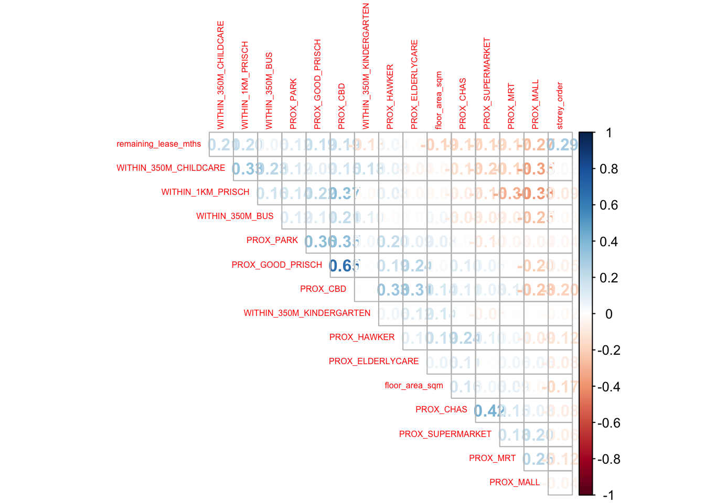

pacman::p_load(sf, spdep, GWmodel, SpatialML, tmap, rsample, Metrics, tidyverse)8A: Geographically Weighted Predictive Models
In this exercise, we will learn how to build predictive models using the geographical random forest method to predict outcomes based on geospatial factors and historical geospatial locations.
1 Exercise 8A Reference
R for Geospatial Data Science and Analytics - 14 Geographically Weighted Predictive Models
2 Overview
In this exercise, we will learn how to build predictive models using the geographical random forest method to predict outcomes based on geospatial factors and historical geospatial locations.
Predictive modeling uses statistical and machine learning techniques to forecast future outcomes. To build these models, we start with a dataset where the outcomes are already known, along with various input variables (predictors) that might influence those outcomes. The model learns from these known examples to make accurate predictions about future events.
Geospatial predictive modelling is conceptually rooted in the principle that the occurrences of events being modeled are limited in distribution.
When geographically referenced data are used, occurrences of events are neither uniform nor random in distribution over space. There are geospatial factors (infrastructure, sociocultural, topographic, etc.) that constrain and influence where the locations of events occur.
Geospatial predictive modeling identifies and analyzes these factors by examining the relationship between past event locations and the environmental conditions that might have influenced those locations. This helps to better understand and predict where similar events are likely to happen in the future.
Tip
Several sections in this exercise will take a while to compute… , we will save several intermediate rds file as checkpoints for future uses.
3 Learning Outcome
- Prepare training and test datasets using appropriate data sampling methods.
- Calibrate predictive models using both geospatial statistical learning and machine learning methods.
- Compare and select the best model for predicting future outcomes.
- Predict future outcomes using the best-calibrated model.
4 The Data
The following datasets will be used in this study:
| Data Type | Description | Format |
|---|---|---|
| Aspatial dataset | HDB Resale data: a list of HDB resale transacted prices in Singapore from Jan 2017 onwards. | CSV |
| Geospatial dataset | MP14_SUBZONE_WEB_PL: A polygon feature dataset providing information on URA 2014 Master Plan Planning Subzone boundary data. | ESRI Shapefile |
| Locational factors with geographic coordinates | Various data sets including Eldercare, Hawker Centre, Parks, Supermarket, CHAS clinics, Childcare services, Kindergartens, MRT, and Bus stops. | GeoJSON/Shapefile |
| Locational factors without geographic coordinates | Primary school data, CBD coordinates, Shopping malls, Good primary schools (ranking by popularity). | CSV/Other Sources |
5 Installing and Launching the R Packages
The following R packages will be used in this exercise:
| Package | Purpose | Use Case in Exercise |
|---|---|---|
| sf | Handles vector-based geospatial data. | Importing and manipulating polygon and point feature data. |
| spdep | Provides functions for spatial dependence analysis, including spatial weights and spatial autocorrelation. | Performing spatially constrained cluster analysis using geographically weighted regression (GWR). |
| GWmodel | Provides geographically weighted modeling methods. | Calibrating models to predict HDB resale prices using geographically weighted regression. |
| SpatialML | Supports geographical random forest models and spatial machine learning methods. | Calibrating models using geographically weighted random forest (GW RF). |
| tmap | Creates static and interactive thematic maps. | Visualizing geospatial data, model predictions, and other geographic patterns. |
| rsample | Provides tools for data resampling. | Splitting datasets into training and testing subsets. |
| Metrics | Provides evaluation metrics for statistical and machine learning models. | Calculating RMSE (Root Mean Square Error) to evaluate model accuracy. |
| tidyverse | A collection of packages for data science tasks such as data manipulation, visualization, and modeling. | Data wrangling, visualization, and performing statistical operations on datasets. |
To install and load these packages, use the following code:
6 Import Data and Preparation
6.1 Reading Data File
We begin by loading the input data, which is stored as a simple feature data frame.
mdata <- read_rds("data/aspatial/mdata.rds")6.2 Data Sampling
The data is split into 65% training and 35% test sets using the initial_split() function from the rsample package (part of tidymodels).
set.seed(1234)
resale_split <- initial_split(mdata,
prop = 6.5/10,)
train_data <- training(resale_split)
test_data <- testing(resale_split)Save the split datasets:
write_rds(train_data, "data/model/train_data.rds")
write_rds(test_data, "data/model/test_data.rds")6.3 Computing Correlation Matrix
It is important to check for multicollinearity using a correlation matrix before building the predictive model.
mdata_nogeo <- mdata %>% st_drop_geometry()
corrplot::corrplot(cor(mdata_nogeo[, 2:17]),
diag = FALSE,
order = "AOE",
tl.pos = "td",
tl.cex = 0.5,
method = "number",
type = "upper")
Note
Observations: All correlation values are below 0.8, indicating no sign of multicollinearity.
6.4 Retrieving Stored Data
Finally, load the previously saved training and test data:
train_data <- read_rds("data/model/train_data.rds")
test_data <- read_rds("data/model/test_data.rds")7 Building a Non-Spatial Multiple Linear Regression
Next, we will build a multiple linear regression (MLR) model to predict resale_price using various predictors:
price_mlr <- lm(resale_price ~
floor_area_sqm +
storey_order +
remaining_lease_mths +
PROX_CBD +
PROX_ELDERLYCARE +
PROX_HAWKER +
PROX_MRT +
PROX_PARK +
#PROX_GOOD_PRISCH +
PROX_MALL +
#PROX_CHAS +
PROX_SUPERMARKET +
WITHIN_350M_KINDERGARTEN +
WITHIN_350M_CHILDCARE +
WITHIN_350M_BUS +
WITHIN_1KM_PRISCH,
data=train_data)
summary(price_mlr)
Call:
lm(formula = resale_price ~ floor_area_sqm + storey_order + remaining_lease_mths +
PROX_CBD + PROX_ELDERLYCARE + PROX_HAWKER + PROX_MRT + PROX_PARK +
PROX_MALL + PROX_SUPERMARKET + WITHIN_350M_KINDERGARTEN +
WITHIN_350M_CHILDCARE + WITHIN_350M_BUS + WITHIN_1KM_PRISCH,
data = train_data)
Residuals:
Min 1Q Median 3Q Max
-205193 -39120 -1930 36545 472355
Coefficients:
Estimate Std. Error t value Pr(>|t|)
(Intercept) 107601.073 10601.261 10.150 < 2e-16 ***
floor_area_sqm 2780.698 90.579 30.699 < 2e-16 ***
storey_order 14299.298 339.115 42.167 < 2e-16 ***
remaining_lease_mths 344.490 4.592 75.027 < 2e-16 ***
PROX_CBD -16930.196 201.254 -84.124 < 2e-16 ***
PROX_ELDERLYCARE -14441.025 994.867 -14.516 < 2e-16 ***
PROX_HAWKER -19265.648 1273.597 -15.127 < 2e-16 ***
PROX_MRT -32564.272 1744.232 -18.670 < 2e-16 ***
PROX_PARK -5712.625 1483.885 -3.850 0.000119 ***
PROX_MALL -14717.388 2007.818 -7.330 2.47e-13 ***
PROX_SUPERMARKET -26881.938 4189.624 -6.416 1.46e-10 ***
WITHIN_350M_KINDERGARTEN 8520.472 632.812 13.464 < 2e-16 ***
WITHIN_350M_CHILDCARE -4510.650 354.015 -12.741 < 2e-16 ***
WITHIN_350M_BUS 813.493 222.574 3.655 0.000259 ***
WITHIN_1KM_PRISCH -8010.834 491.512 -16.298 < 2e-16 ***
---
Signif. codes: 0 '***' 0.001 '**' 0.01 '*' 0.05 '.' 0.1 ' ' 1
Residual standard error: 61650 on 10320 degrees of freedom
Multiple R-squared: 0.7373, Adjusted R-squared: 0.737
F-statistic: 2069 on 14 and 10320 DF, p-value: < 2.2e-16Save the model for future use:
write_rds(price_mlr, "data/model/price_mlr.rds") 8 GWR Predictive Method
In this section, we use Geographically Weighted Regression (GWR) to predict HDB resale prices.
8.1 Converting sf Data Frame to SpatialPointsDataFrame
Convert the training data into a SpatialPointsDataFrame for use in GWR:
train_data_sp <- as_Spatial(train_data)
train_data_spclass : SpatialPointsDataFrame
features : 10335
extent : 11597.31, 42623.63, 28217.39, 48741.06 (xmin, xmax, ymin, ymax)
crs : +proj=tmerc +lat_0=1.36666666666667 +lon_0=103.833333333333 +k=1 +x_0=28001.642 +y_0=38744.572 +ellps=WGS84 +towgs84=0,0,0,0,0,0,0 +units=m +no_defs
variables : 17
names : resale_price, floor_area_sqm, storey_order, remaining_lease_mths, PROX_CBD, PROX_ELDERLYCARE, PROX_HAWKER, PROX_MRT, PROX_PARK, PROX_GOOD_PRISCH, PROX_MALL, PROX_CHAS, PROX_SUPERMARKET, WITHIN_350M_KINDERGARTEN, WITHIN_350M_CHILDCARE, ...
min values : 218000, 74, 1, 555, 0.999393538715878, 1.98943787433087e-08, 0.0333358643817954, 0.0220407324774434, 0.0441643212802781, 0.0652540365486641, 0, 6.20621206270077e-09, 1.21715176356525e-07, 0, 0, ...
max values : 1186888, 133, 17, 1164, 19.6500691667807, 3.30163731686804, 2.86763031236184, 2.13060636038504, 2.41313695915468, 10.6223726149914, 2.27100643784442, 0.808332738794272, 1.57131703651196, 7, 20, ... 8.2 Computing Adaptive Bandwidth
Next, we use bw.gwr() to compute the optimal adaptive bandwidth using cross-validation:
bw_adaptive <- bw.gwr(resale_price ~
floor_area_sqm +
storey_order +
remaining_lease_mths +
PROX_CBD +
PROX_ELDERLYCARE +
PROX_HAWKER +
PROX_MRT +
PROX_PARK +
#PROX_GOOD_PRISCH +
PROX_MALL +
#PROX_CHAS +
PROX_SUPERMARKET +
WITHIN_350M_KINDERGARTEN +
WITHIN_350M_CHILDCARE +
WITHIN_350M_BUS +
WITHIN_1KM_PRISCH,
data=train_data_sp,
approach="CV",
kernel="gaussian",
adaptive=TRUE,
longlat=FALSE)
Note
Observations:
Based on the output from bw.gwr() function, the optimal bandwidth is determined to be 40 neighbor points. This means the model will consider the 40 nearest neighbors when estimating parameters for a specific location.
Save the result:
write_rds(bw_adaptive, "data/model/bw_adaptive.rds")8.3 Constructing the Adaptive Bandwidth GWR Model
Load the saved bandwidth and calibrate the GWR model:
bw_adaptive <- read_rds("data/model/bw_adaptive.rds")
bw_adaptive[1] 40Now, we can go ahead to calibrate the gwr-based hedonic pricing model by using adaptive bandwidth and Gaussian kernel as shown in the code below.
gwr_adaptive <- gwr.basic(formula = resale_price ~
floor_area_sqm +
storey_order +
remaining_lease_mths +
PROX_CBD +
PROX_ELDERLYCARE +
PROX_HAWKER +
PROX_MRT +
PROX_PARK +
#PROX_GOOD_PRISCH +
PROX_MALL +
#PROX_CHAS +
PROX_SUPERMARKET +
WITHIN_350M_KINDERGARTEN +
WITHIN_350M_CHILDCARE +
WITHIN_350M_BUS +
WITHIN_1KM_PRISCH,
data = train_data_sp,
bw = bw_adaptive,
kernel = 'gaussian',
adaptive = TRUE,
longlat = FALSE)Save the GWR model:
write_rds(gwr_adaptive, "data/model/gwr_adaptive.rds")8.4 Retrieving the GWR Model
To retrieve and display the saved GWR model:
gwr_adaptive <- read_rds("data/model/gwr_adaptive.rds")
gwr_adaptive ***********************************************************************
* Package GWmodel *
***********************************************************************
Program starts at: 2024-09-29 03:07:48.292409
Call:
gwr.basic(formula = resale_price ~ floor_area_sqm + storey_order +
remaining_lease_mths + PROX_CBD + PROX_ELDERLYCARE + PROX_HAWKER +
PROX_MRT + PROX_PARK + PROX_MALL + PROX_SUPERMARKET + WITHIN_350M_KINDERGARTEN +
WITHIN_350M_CHILDCARE + WITHIN_350M_BUS + WITHIN_1KM_PRISCH,
data = train_data_sp, bw = bw_adaptive, kernel = "gaussian",
adaptive = TRUE, longlat = FALSE)
Dependent (y) variable: resale_price
Independent variables: floor_area_sqm storey_order remaining_lease_mths PROX_CBD PROX_ELDERLYCARE PROX_HAWKER PROX_MRT PROX_PARK PROX_MALL PROX_SUPERMARKET WITHIN_350M_KINDERGARTEN WITHIN_350M_CHILDCARE WITHIN_350M_BUS WITHIN_1KM_PRISCH
Number of data points: 10335
***********************************************************************
* Results of Global Regression *
***********************************************************************
Call:
lm(formula = formula, data = data)
Residuals:
Min 1Q Median 3Q Max
-205193 -39120 -1930 36545 472355
Coefficients:
Estimate Std. Error t value Pr(>|t|)
(Intercept) 107601.073 10601.261 10.150 < 2e-16 ***
floor_area_sqm 2780.698 90.579 30.699 < 2e-16 ***
storey_order 14299.298 339.115 42.167 < 2e-16 ***
remaining_lease_mths 344.490 4.592 75.027 < 2e-16 ***
PROX_CBD -16930.196 201.254 -84.124 < 2e-16 ***
PROX_ELDERLYCARE -14441.025 994.867 -14.516 < 2e-16 ***
PROX_HAWKER -19265.648 1273.597 -15.127 < 2e-16 ***
PROX_MRT -32564.272 1744.232 -18.670 < 2e-16 ***
PROX_PARK -5712.625 1483.885 -3.850 0.000119 ***
PROX_MALL -14717.388 2007.818 -7.330 2.47e-13 ***
PROX_SUPERMARKET -26881.938 4189.624 -6.416 1.46e-10 ***
WITHIN_350M_KINDERGARTEN 8520.472 632.812 13.464 < 2e-16 ***
WITHIN_350M_CHILDCARE -4510.650 354.015 -12.741 < 2e-16 ***
WITHIN_350M_BUS 813.493 222.574 3.655 0.000259 ***
WITHIN_1KM_PRISCH -8010.834 491.512 -16.298 < 2e-16 ***
---Significance stars
Signif. codes: 0 '***' 0.001 '**' 0.01 '*' 0.05 '.' 0.1 ' ' 1
Residual standard error: 61650 on 10320 degrees of freedom
Multiple R-squared: 0.7373
Adjusted R-squared: 0.737
F-statistic: 2069 on 14 and 10320 DF, p-value: < 2.2e-16
***Extra Diagnostic information
Residual sum of squares: 3.922202e+13
Sigma(hat): 61610.08
AIC: 257320.2
AICc: 257320.3
BIC: 247249
***********************************************************************
* Results of Geographically Weighted Regression *
***********************************************************************
*********************Model calibration information*********************
Kernel function: gaussian
Adaptive bandwidth: 40 (number of nearest neighbours)
Regression points: the same locations as observations are used.
Distance metric: Euclidean distance metric is used.
****************Summary of GWR coefficient estimates:******************
Min. 1st Qu. Median 3rd Qu.
Intercept -3.2594e+08 -4.7727e+05 -8.3004e+03 5.5025e+05
floor_area_sqm -2.8714e+04 1.4475e+03 2.3011e+03 3.3900e+03
storey_order 3.3186e+03 8.5899e+03 1.0826e+04 1.3397e+04
remaining_lease_mths -1.4431e+03 2.6063e+02 3.9048e+02 5.2865e+02
PROX_CBD -1.0837e+07 -5.7697e+04 -1.3787e+04 2.6552e+04
PROX_ELDERLYCARE -3.2291e+07 -4.0643e+04 1.0562e+04 6.1054e+04
PROX_HAWKER -2.3985e+08 -5.1365e+04 3.0026e+03 6.4287e+04
PROX_MRT -1.1660e+07 -1.0488e+05 -4.9373e+04 5.1037e+03
PROX_PARK -6.5961e+06 -4.8671e+04 -8.8128e+02 5.3498e+04
PROX_MALL -1.8112e+07 -7.4238e+04 -1.3982e+04 4.9779e+04
PROX_SUPERMARKET -4.5761e+06 -6.3461e+04 -1.7429e+04 3.5616e+04
WITHIN_350M_KINDERGARTEN -4.1881e+05 -6.0040e+03 9.0209e+01 4.7127e+03
WITHIN_350M_CHILDCARE -1.0273e+05 -2.2375e+03 2.6668e+02 2.6388e+03
WITHIN_350M_BUS -1.1757e+05 -1.4719e+03 1.1626e+02 1.7584e+03
WITHIN_1KM_PRISCH -6.6465e+05 -5.5959e+03 2.6916e+02 5.7500e+03
Max.
Intercept 1.6493e+08
floor_area_sqm 5.0907e+04
storey_order 2.9537e+04
remaining_lease_mths 1.8119e+03
PROX_CBD 2.2489e+07
PROX_ELDERLYCARE 8.2444e+07
PROX_HAWKER 5.9654e+06
PROX_MRT 2.0189e+08
PROX_PARK 1.5224e+07
PROX_MALL 1.0443e+07
PROX_SUPERMARKET 3.8330e+06
WITHIN_350M_KINDERGARTEN 6.6799e+05
WITHIN_350M_CHILDCARE 1.0802e+05
WITHIN_350M_BUS 3.7313e+04
WITHIN_1KM_PRISCH 5.0262e+05
************************Diagnostic information*************************
Number of data points: 10335
Effective number of parameters (2trace(S) - trace(S'S)): 1730.101
Effective degrees of freedom (n-2trace(S) + trace(S'S)): 8604.899
AICc (GWR book, Fotheringham, et al. 2002, p. 61, eq 2.33): 238871.8
AIC (GWR book, Fotheringham, et al. 2002,GWR p. 96, eq. 4.22): 237036.9
BIC (GWR book, Fotheringham, et al. 2002,GWR p. 61, eq. 2.34): 238209
Residual sum of squares: 4.829177e+12
R-square value: 0.9676571
Adjusted R-square value: 0.9611535
***********************************************************************
Program stops at: 2024-09-29 03:09:04.929015 8.5 Converting Test Data to SpatialPointsDataFrame
Convert the test data:
test_data_sp <- test_data %>%
as_Spatial()
test_data_spclass : SpatialPointsDataFrame
features : 5566
extent : 11597.31, 42623.63, 28287.8, 48669.59 (xmin, xmax, ymin, ymax)
crs : +proj=tmerc +lat_0=1.36666666666667 +lon_0=103.833333333333 +k=1 +x_0=28001.642 +y_0=38744.572 +ellps=WGS84 +towgs84=0,0,0,0,0,0,0 +units=m +no_defs
variables : 17
names : resale_price, floor_area_sqm, storey_order, remaining_lease_mths, PROX_CBD, PROX_ELDERLYCARE, PROX_HAWKER, PROX_MRT, PROX_PARK, PROX_GOOD_PRISCH, PROX_MALL, PROX_CHAS, PROX_SUPERMARKET, WITHIN_350M_KINDERGARTEN, WITHIN_350M_CHILDCARE, ...
min values : 230888, 74, 1, 546, 1.00583660772922, 3.34897933104965e-07, 0.0474019664161957, 0.0414043955932523, 0.0502664084494264, 0.0907500295577619, 0, 4.55547870890763e-09, 1.21715176356525e-07, 0, 0, ...
max values : 1050000, 138, 14, 1151, 19.632402730488, 3.30163731686804, 2.83106651960209, 2.13060636038504, 2.41313695915468, 10.6169590126272, 2.26056404492346, 0.79249074802552, 1.53786629004208, 7, 16, ... 8.6 Computing Adaptive Bandwidth for the Test Data
Similarly, we use the bw.gwr() function from the GWmodel package to determine the optimal bandwidth for our GWR model on the test data.
gwr_bw_test_adaptive <- bw.gwr(resale_price ~
floor_area_sqm +
storey_order +
remaining_lease_mths +
PROX_CBD +
PROX_ELDERLYCARE +
PROX_HAWKER +
PROX_MRT +
PROX_PARK +
#PROX_GOOD_PRISCH +
PROX_MALL +
#PROX_CHAS +
PROX_SUPERMARKET +
WITHIN_350M_KINDERGARTEN +
WITHIN_350M_CHILDCARE +
WITHIN_350M_BUS +
WITHIN_1KM_PRISCH,
data = test_data_sp,
approach = "CV",
kernel = "gaussian",
adaptive = TRUE,
longlat = FALSE)write_rds(gwr_bw_test_adaptive, "data/model/gwr_bw_test_adaptive.rds")gwr_bw_test_adaptive <- read_rds("data/model/gwr_bw_test_adaptive.rds")8.7 Computing Predicted Values of the Test Data
Finally, we use the gwr.predict() function from the GWmodel package to compute the predicted values of the test data based on our GWR model. We specify our formula, training data, test data, bandwidth, kernel type, and set adaptive=TRUE and longlat=FALSE.
gwr_pred <- gwr.predict(formula = resale_price ~
floor_area_sqm + storey_order +
remaining_lease_mths + PROX_CBD +
PROX_ELDERLYCARE + PROX_HAWKER +
PROX_MRT + PROX_PARK + PROX_MALL +
PROX_SUPERMARKET + WITHIN_350M_KINDERGARTEN +
WITHIN_350M_CHILDCARE + WITHIN_350M_BUS +
WITHIN_1KM_PRISCH,
data=train_data_sp,
predictdata = test_data_sp,
bw=40,
kernel = 'gaussian',
adaptive=TRUE,
longlat = FALSE)9 Preparing Coordinates Data
9.1 Extracting Coordinates
The code below extracts the x, y coordinates for the full, training, and test datasets:
coords <- st_coordinates(mdata)
coords_train <- st_coordinates(train_data)
coords_test <- st_coordinates(test_data)Save the extracted coordinates for future use:
coords_train <- write_rds(coords_train, "data/model/coords_train.rds")
coords_test <- write_rds(coords_test, "data/model/coords_test.rds")coords_train <- read_rds("data/model/coords_train.rds")
coords_test <- read_rds("data/model/coords_test.rds")9.2 Dropping Geometry Field
We remove the geometry column from the training data using st_drop_geometry():
train_data <- train_data %>%
st_drop_geometry()10 Calibrating Random Forest Model
We will now calibrate a random forest model using the ranger package to predict HDB resale prices:
set.seed(1234)
rf <- ranger(resale_price ~ floor_area_sqm + storey_order +
remaining_lease_mths + PROX_CBD + PROX_ELDERLYCARE +
PROX_HAWKER + PROX_MRT + PROX_PARK + PROX_MALL +
PROX_SUPERMARKET + WITHIN_350M_KINDERGARTEN +
WITHIN_350M_CHILDCARE + WITHIN_350M_BUS +
WITHIN_1KM_PRISCH,
data=train_data)Save the model:
write_rds(rf, "data/model/rf.rds")rf <- read_rds("data/model/rf.rds")
rfRanger result
Call:
ranger(resale_price ~ floor_area_sqm + storey_order + remaining_lease_mths + PROX_CBD + PROX_ELDERLYCARE + PROX_HAWKER + PROX_MRT + PROX_PARK + PROX_MALL + PROX_SUPERMARKET + WITHIN_350M_KINDERGARTEN + WITHIN_350M_CHILDCARE + WITHIN_350M_BUS + WITHIN_1KM_PRISCH, data = train_data)
Type: Regression
Number of trees: 500
Sample size: 10335
Number of independent variables: 14
Mtry: 3
Target node size: 5
Variable importance mode: none
Splitrule: variance
OOB prediction error (MSE): 731404460
R squared (OOB): 0.9493789 11 Calibrating Geographical Random Forest Model
We now calibrate a geographic random forest model using grf() from the SpatialML package.
11.1 Calibrating with Training Data
Calibrate the model with an adaptive bandwidth:
set.seed(1234)
gwRF_adaptive <- grf(formula = resale_price ~ floor_area_sqm + storey_order +
remaining_lease_mths + PROX_CBD + PROX_ELDERLYCARE +
PROX_HAWKER + PROX_MRT + PROX_PARK + PROX_MALL +
PROX_SUPERMARKET + WITHIN_350M_KINDERGARTEN +
WITHIN_350M_CHILDCARE + WITHIN_350M_BUS +
WITHIN_1KM_PRISCH,
dframe=train_data,
bw=55,
kernel="adaptive",
coords=coords_train)Save the model:
write_rds(gwRF_adaptive, "data/model/gwRF_adaptive.rds")gwRF_adaptive <- read_rds("data/model/gwRF_adaptive.rds")11.2 Predicting with Test Data
11.2.1 Preparing the Test Data
Combine the test data with its coordinates:
test_data <- cbind(test_data, coords_test) %>%
st_drop_geometry()11.2.2 Predicting Resale Prices
Use the trained geographical random forest model to predict prices:
gwRF_pred <- predict.grf(gwRF_adaptive,
test_data,
x.var.name = "X",
y.var.name = "Y",
local.w = 1,
global.w = 0)Save the predicted values:
GRF_pred <- write_rds(gwRF_pred, "data/model/GRF_pred.rds")11.2.3 Converting Predicted Output into a Data Frame
The output of the predict.grf() function is a vector of predicted values. For further visualization and analysis, it’s useful to convert it into a data frame. To convert the prediction output to a data frame for analysis:
GRF_pred <- read_rds("data/model/GRF_pred.rds")
GRF_pred_df <- as.data.frame(GRF_pred)# append pred values into the test data
test_data_p <- cbind(test_data, GRF_pred_df)write_rds(test_data_p, "data/model/test_data_p.rds")11.3 Calculating Root Mean Square Error (RMSE)
Compute RMSE to evaluate the model’s predictive accuracy:
test_data_p <- read_rds("data/model/test_data_p.rds")
rmse(test_data_p$resale_price,
test_data_p$GRF_pred)[1] 27302.9The lower the RMSE value, the better the predictive model is.
11.4 Visualizing the Predicted Values
Create a scatterplot to compare actual vs. predicted resale prices:
ggplot(data = test_data_p, aes(x = GRF_pred, y = resale_price)) +
geom_point()+
geom_abline(slope = 1, intercept = 0, color = "red", linetype = "solid")
Note
A good predictive model should have the scatter point close to the diagonal line. The scatter plot can be also used to detect if any outliers in the model.